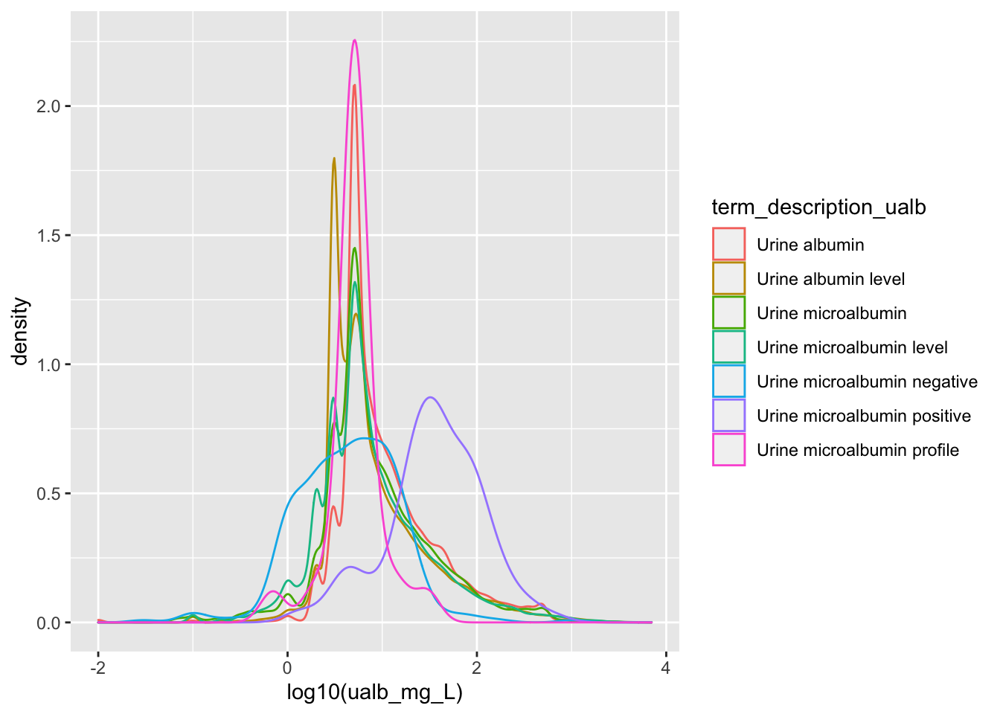

11.7 Urine Albumin
UK Biobank measurements for microalbumin in urine have a maximum value of 6746.5 mg/L, with many values below the measurement instrument’s lower limit of detection of 6.7 mg/L. We filter the allowable range to be under 7,000, but not 0.
#Extract urine albumin
ualb <- gp_clinical %>%
filter(grepl(urine_albumin_codes, code, ignore.case=T)) %>%
mutate(micro=grepl("micro", term_description, ignore.case=T)) %>%
mutate(value = coalesce(as.numeric(value1), as.numeric(value2), as.numeric(value3))) %>%
filter(!is.na(value) & value != 0) %>% #& value < 500
filter(!(value3 %in% c("0.3", "MEA001", "mg/mmol", "ml/min", "mmol/L", "MEA086",
"MEA096", "MEA120", "MEA142", "MEA166", "g/L", "MEA057"))) %>%
filter(value < 7000) %>%
select(-value1, -value2) %>%
dplyr::rename(code_ualb = code, term_description_ualb = term_description,
ualb_mg_L = value) %>%
distinct()
ualb %>% group_by(code_ualb, term_description_ualb) %>%
summarize(n=n(), mean = mean(ualb_mg_L)) %>%
arrange(desc(n)) %>% kable()| code_ualb | term_description_ualb | n | mean |
|---|---|---|---|
| XE2eI | Urine albumin level | 72399 | 32.51820 |
| XE2bw | Urine microalbumin level | 52581 | 33.06640 |
| 46N4. | Urine albumin | 28119 | 33.41504 |
| 46W.. | Urine microalbumin | 11801 | 29.60518 |
| 46W1. | Urine microalbumin negative | 304 | 11.47477 |
| 46W0. | Urine microalbumin positive | 105 | 64.95429 |
| 46N8. | Urine microalbumin profile | 25 | 6.35600 |
Based on the distributions, albumin values are given in mg/L, regardless of whether the term description says microalbumin or albumin.
